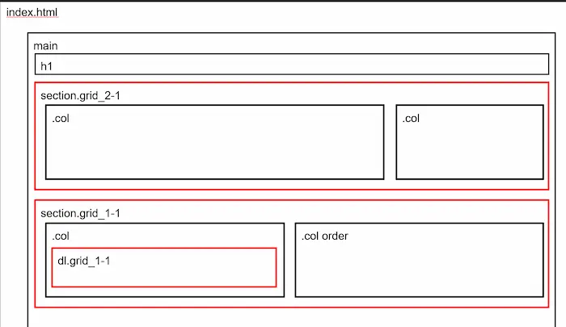
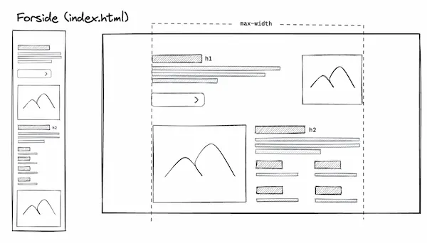

Grundlæggende web
I tema 2 lærte vi hvordan man sætter html og css sider op. Derfor lærte vi at bruge grid, flex og media query. Vi har haft om de grundlæggende designprincipper, og hvordan man anvender dem der er fx Rule of thirds, Edward Tuftes 1+1=3, og hvordan kontrast og mængde hierarki bruges til at trække blikket hen til flere fokuspunkter i en bestemt rækkefølge. Til sidst i forløbet skulle vi aflevere studiestartsprøven, en simpel website som vi skulle kode selv. Vi fik udleveret indholdet – wireframe, layoutdiagram, billeder og tekst, men målet var at praktisere selve kodningen, og hvordan man sætter sider op i Visual Studio Code.
Mobil
Vi startede med at lave mobilversionen af sitet. Her skulle vi lave grundstrukturen – der skulle være 5 html sider. Vi skulle bruge 2 fonte (1 fra google fonts og 1 fra font squirrel som skulle konverteres til WOFF) og 2 farver. Målet var at lære det hele at kende, da det var det første site vi lavede. Jeg udførte opgaven ved at starte med at kigge på wireframes og layoutdiagram.
Layoutdiagram
Wireframe
HTML
Jeg satte ikke skelettet ind til at starte med, jeg begyndte bare at sætte elementer ind en efter en, de havde ikke nogen klasser, jeg glemte helt at bruge layoutdiagrammet. Derefter satte jeg indhold ind, og oprettede et style.css til at putte farve og font på sitet.
CSS
Jeg udvalgte 2 farver og 2 fonte, men jeg havde ikke så meget fokus på det æstetiske og at følge designprincipperne (det var dog stadig et krav at det skulle se pænt ud) men mit hovedmål var at udføre opgaven. Jeg kom til at bruge en ulæselig font. Farverne jeg valgte stod i kontrast til hinanden, men jeg synes selv at det ikke var behageligt at se på, hvorfor jeg ændrede dem senere hen til en lidt mere blid kontrast. Hvis jeg skulle gøre det om igen, ville jeg have sat skelettet ind i html siderne og ventet med selve billede og tekst til jeg havde strukturen på plads.
Studiestartsprøven
I denne opgave skulle vi udvikle vores site til også at fungere på desktop. I mobilversionen havde jeg glemt at oprette klasser til mine elementer, så det gjorde jeg i den her opgave. Jeg lavede en ekstra css side specifikt til layoutet. Inde i den oprettede jeg en media query, og inde i den oprettede jeg grids på klasserne ligesom på layoutdiagrammene, og gav elementerne rækker og kolonner.
HTML
I mobilversionen havde jeg glemt at oprette klasser til mine elementer, så det gjorde jeg i den her opgave.
CSS
Jeg lavede en ekstra css side specifikt til layoutet. Inde i den oprettede jeg en media query, og inde i den oprettede jeg grids på klasserne ligesom på layoutdiagrammene, og gav elementerne rækker og kolonner.